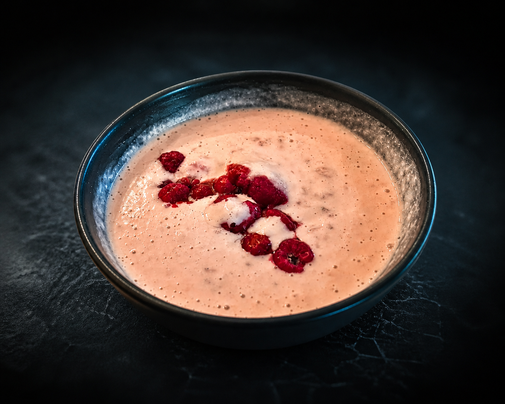

Yaourt protéiné aux fruits rouges

Ingrédients
- 150 g de skyr 0%
- 1 scoop de whey
- 60 ml de lait demi-écrémé
- 80 g de fraises
- 50 g de framboises
Préparation
- Écraser grossièrement les fraises dans un bol avec une fourchette.
- Ajouter le reste des ingrédients sauf les framboises, puis mélanger.
- Ajouter les framboises à la fin pour ne pas les écraser.
- Laisser reposer au moins 4h au frigo.
Valeurs nutritionnelles (approx.)
Par portion : 268 kcal • 42 g protéines • 17 g glucides • 2 g lipides • 6 g fibres